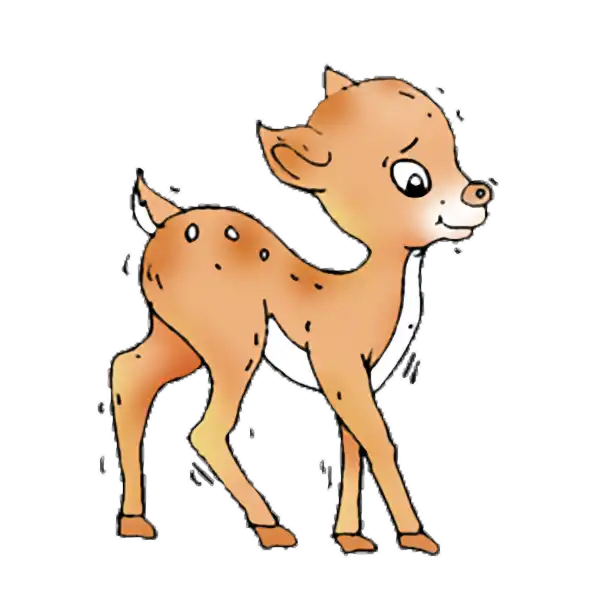
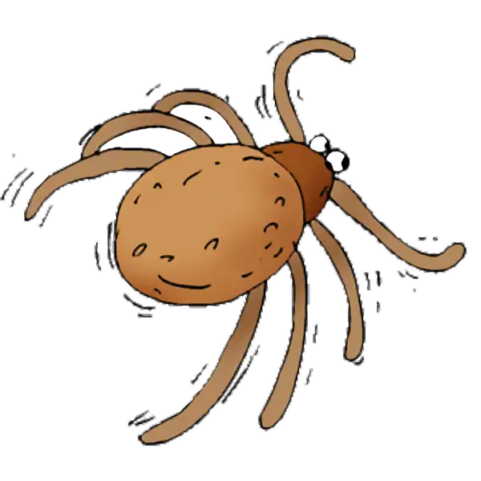

Extrai o ZIP inteiro e abre este ficheiro no Edge ou Chrome. Funciona sem Internet.
Estes dois pares pertencem ao vocabulário antigo. As 32 gravações que já aprovaste mantêm a aprovação e não precisam de ser ouvidas novamente.
Compara cada imagem com o nome proposto e ouve os dois áudios. Confirma os nomes e a pronúncia, ou indica uma correção por número. As propostas ainda não estão instaladas no jogo.
1. cervato

Texto atual do corpus: corso.
Gravação antiga. A palavra pronunciada ainda precisa de ser confirmada:
Proposta de texto e nova amostra: cervato.
Se a gravação antiga já disser a palavra correta, indica que deve ser conservada.
2. carraça

Texto atual do corpus: piolho.
Gravação antiga. A palavra pronunciada ainda precisa de ser confirmada:
Proposta de texto e nova amostra: carraça.
Se a gravação antiga já disser a palavra correta, indica que deve ser conservada.
Referências: cervato e carraça. Os links são opcionais; os áudios e as imagens estão incluídos no ZIP.
Origem, direitos e hashes: NOTICE.md e manifest.json.